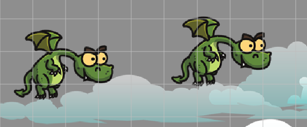
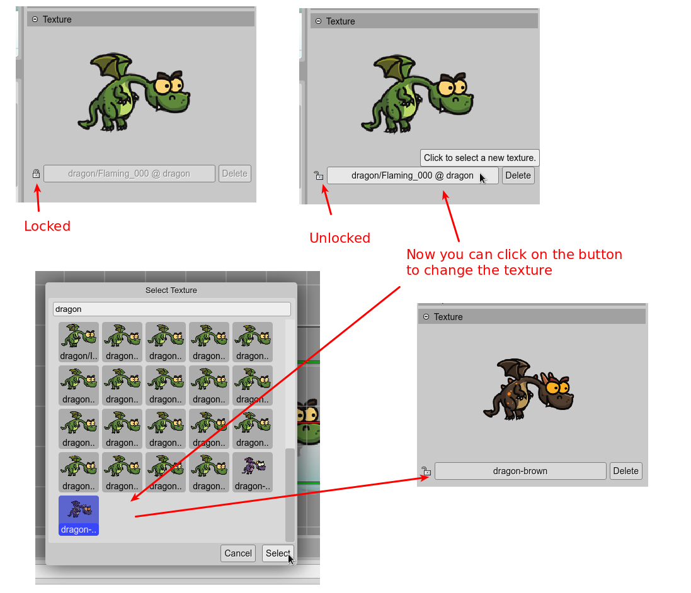
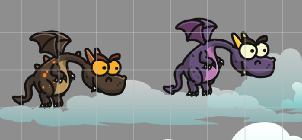
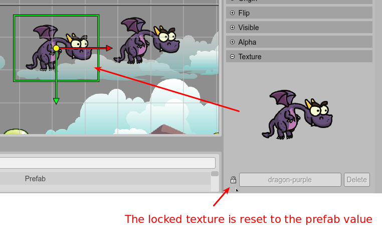

Changing a property of a prefab instance
As we explained in the previous sections, a prefab is just a class that extends other prefab class or a Phaser built-in type.
When you create a prefab instance, the new object gets the properties set in the prefab. For example, the texture of the new instance is the same texture set in the prefab (in the constructor of the prefab class).
If you change the texture in the prefab, all the prefab instances will use the new texture. However, you can unlock the texture property of certain instances and set a different texture.
Note that when you select a prefab instance, the Inspector view shows a “lock” icon next to the object properties. That icon is saying that the property is locked. If you click the icon, it is changed to an “unlocked” icon and means that the property is unlocked.
When you unlock a property, you can change its value, and it is not going to be updated if the property is changed in the prefab. An unlocked property is not linked to the prefab anymore.
It is easy to understand if you see it in terms of a class and a class instance. By default, the instance gets the properties set in the class constructor. But you can change that value when you create the instance, and it will remain the same no matter if you change the class constructor.
Now, if you lock the property again, the property will get the value set in the prefab. Unlocking a property is like reset it to the prefab value.
Let’s see an example step by step:
Create two instances of the Dragon prefab. Both instances use the same texture of the prefab: a green dragon:
You want to change the texture of the first instance, so you unlock the texture property and select a new image:
You want to see how it looks with a purple texture, but you change it in the Dragon prefab file, so, the second prefab instance will be updated automatically to show the new purple dragon texture:
Ok, you love the purple color of the dragon, so you want all the Dragon prefab instances to have the same color. To do this, you lock again the texture property of the first (yet brown) dragon and it gets the prefab texture: the purple one:
